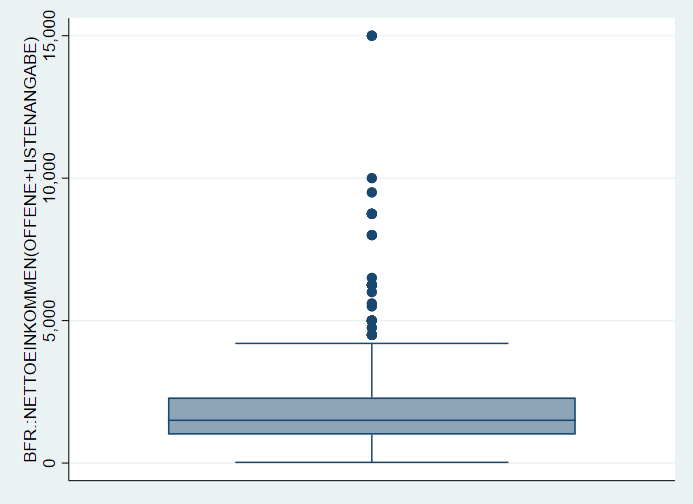
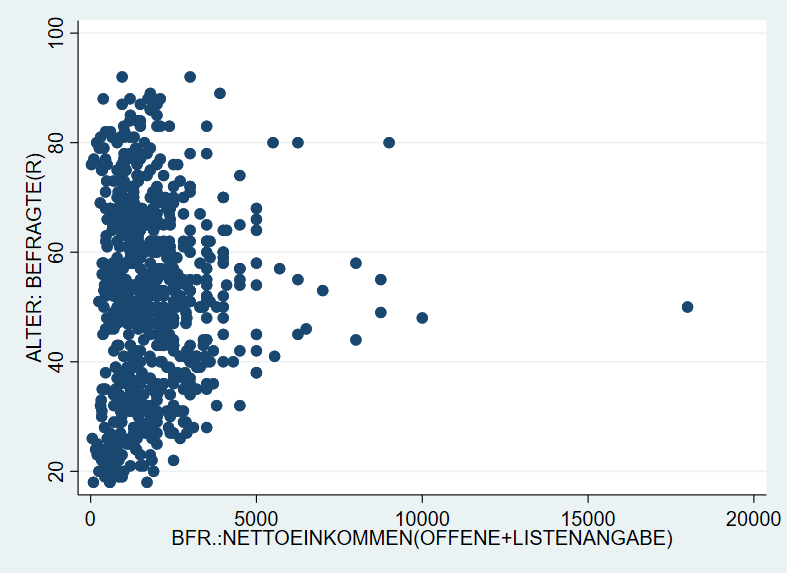
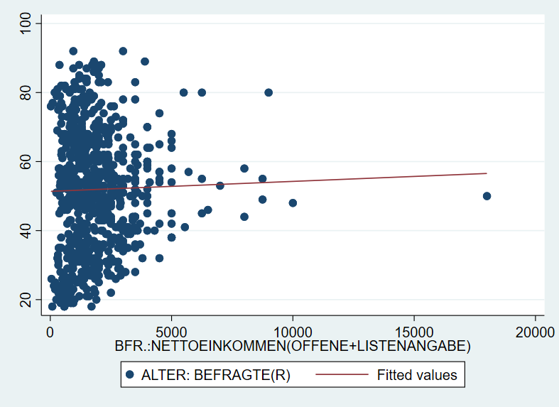
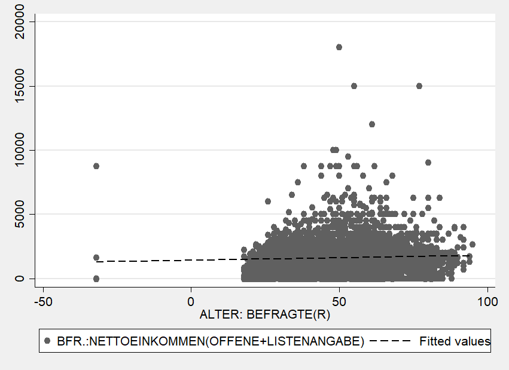
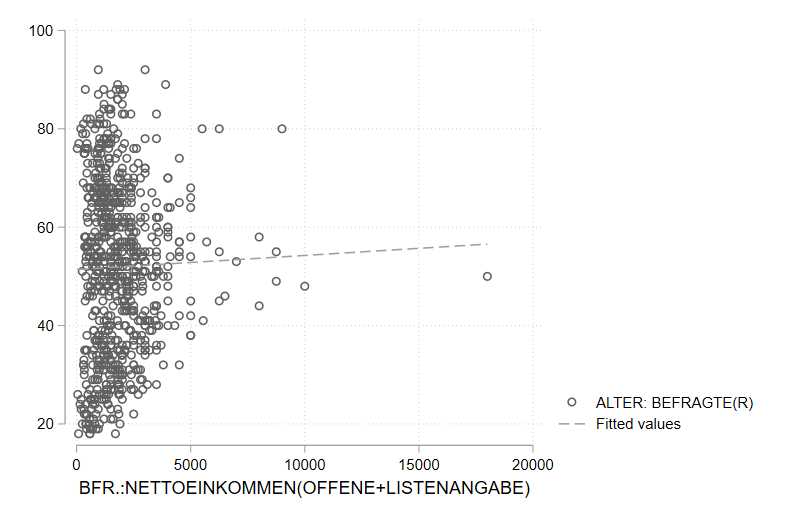
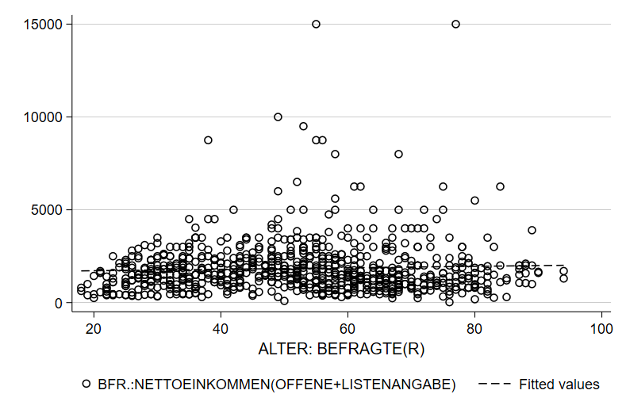
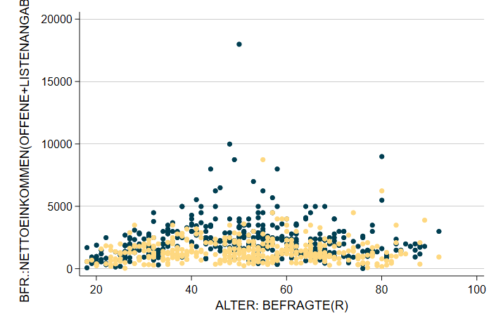
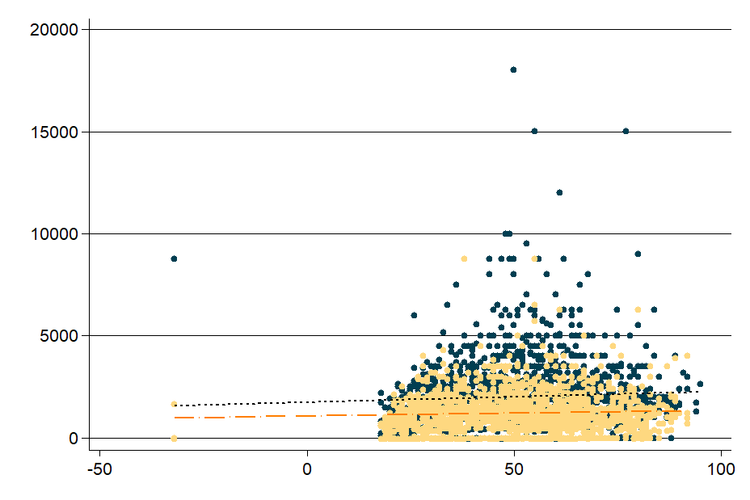
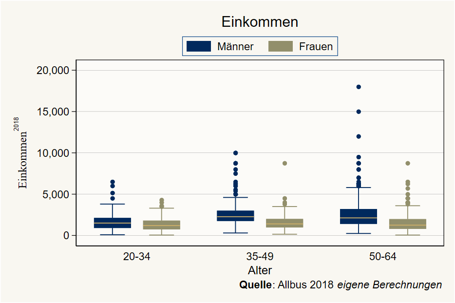

5 Datenvisualisierung in Stata
Wir starten wie immer mit dem Einlesen eines Datensatzes:
use "D:\Studium\01_Oldenburg\Lehre\Datensaetze\Allbus_2018.dta", clear
replace inc = . if inc < 0
replace age = . if age < 0
sample 25 //25% Stichprobe aus den Daten -> läuft schnellerFür Grafiken gilt noch mehr als für alle anderen Aspekte in Stata: ausprobieren und sehen, was passiert! Nachdem in der Regel ja zumindest eine ungefähre Vorstellung existiert, wie die zu erstellende Grafik aussehen soll, sind Grafik-Gallerieren ein guter Startpunkt das eigene Trial & Error.
Eine Übersicht zu allen verfügbaren Visualierungen inklusive Beispielbefehlen findet sich beispielsweise hier oder hier.
5.1 Grafik-Syntax in Stata
In Anlehung an die
Die Syntax für Graphiken in Stata unterscheidet sich vom dem bisher Kennengelernten.
5.1.1 Aufbau
Grafik-Befehle bestehen aus zwei Teilen: dem Befehl graph und der Angabe eines Grafik-Typs. Im folgenden Befehl ist box der Grafik-Typ:

5.1.2 twoway
Beim Grafik-Typ twoway muss der sog. Plottyp, spezifiziert werden. Bspw. für ein Streudiagramm mit dem Befehl scatter:

5.1.3 Kombinieren von zwei twoway-Grafiken
twoway-Grafiken können übereinander gelegt werden. So können wir durch Kombination der Plottypen scatter und lfit ein Streudiagram mit einer Regressionsgerade1 kombinieren:
graph twoway (scatter inc age) (lfit inc age)
Eine alternative Schreibweise mit || führt zur gleichen Grafik:
graph twoway scatter inc age || lfit inc age

5.1.4 Vorlagen
Das Aussehen von Grafiken wird durch sog. Grafik-Schemata beeinflusst. Beispielsweise wird mit , scheme(sj) die Grafik nach den Vorlage des Stata Journals erstellt:

Mit graph query, schemes wird eine Liste der verfügbaren Schemata angezeigt.
Weitere Optionen bieten zB die blindschemes von Daniel Bischof oder lean2 von Svend Juul. Beide müssen zunächst mit ssc install blindschemes bzw. net install gr0002_3, from("http://www.stata-journal.com/software/sj4-3") installiert werden und stehen dann zur Verfügung, zB
Hier noch ein Beispiel mit plotplain aus blindschemes:

…und lean2:

5.1.5 Optionen
Darüber hinaus kann die Grafik mit Hilfe von spezifischen Optionen angepasst werden.
legendpos- labeln
Achsenoptionen
xlabel,ylabel,xtitleoverDarstellungstypen
- Symbole/Linientypen
Farboptionen
mcolor,lcolor,graphregion(color(orange))
Optionen von graph können Unteroptionen haben oder aus einer Liste von Optionen zusammengesetzt werden. Hier zwei Beispiele: xlabel(#20, angle(90)) oder xscale(range(0 300) reverse alt).
5.1.6 Farben
Obwohl es um Darstellungen geht, haben wir noch sehr wenig über Farben gesprochen.
5.1.7 Subgruppen
graph twoway ( scatter inc age if sex == 1 , mc("0 62 81") msymbol(o) ) ( scatter inc age if sex == 2 , mc("254 216 128") msymbol(o) ) ///
graph twoway ( scatter inc age if sex == 1 , mc("0 62 81") msymbol(o) ) ( scatter inc age if sex == 2 , mc("254 216 128") msymbol(o) ) ( lfit inc age if sex == 1 , lc("black") ) ( lfit inc age if sex == 2 , lc("orange") msymbol(o) ) ///
5.2 Abschließende Beispiele
graph box bp_before bp_after, over(agegrp) box(1, color("0 0 128")) scheme(lean2) ytitle("{stSerif:Blutdruck}{superscript:XX}") title("Blutdruckdaten ({it:fiktiv})") caption("{bf:Quelle}: Stata-Daten {it:bpwide}, ein fiktives Beispiel") 
Auch die Darstellung auf der Startseite dieses Skripts wurde mit als Stata-Grafik erstellt:
graph twoway (lfit bp_before bp_after) ( scatter bp_before bp_after if agegrp == 1, mc("0 62 81") msymbol(o) ) ( scatter bp_before bp_after if agegrp == 2, mc("0 125 186") msymbol(o) ) ( scatter bp_before bp_after if agegrp == 3, mc("214 210 196") msymbol(o) ), scheme(lean2) legend(off) xtitle("")
5.3 Bevölkerungspyramide
5.4 Abschließende Bemerkungen
Häufig ist die größte Herausforderung, die Daten so umzustellen, dass sie zum gewünschten graph-Befehl passen.
Was das genau ist, werden wir am Donnerstag besprechen. Für den Moment nur so viel: die Gerade gibt den Zusammenhangstrend beider Variablen wieder.↩︎